Show the package imports
import random
import matplotlib.pyplot as plt
import numpy as np
import pandas as pdACTL3143 & ACTL5111 Deep Learning for Actuaries
import random
import matplotlib.pyplot as plt
import numpy as np
import pandas as pdThe target variable is the median house value for California districts, expressed in $100,000’s. This dataset was derived from the 1990 U.S. census, using one row per census block group. A block group is the smallest geographical unit for which the U.S. Census Bureau publishes sample data (a block group typically has a population of 600 to 3,000 people).

MedInc median income in block groupHouseAge median house age in block groupAveRooms average number of rooms per householdAveBedrms average # of bedrooms per householdPopulation block group populationAveOccup average number of household membersLatitude block group latitudeLongitude block group longitudeMedHouseVal median house value (target)1from sklearn.datasets import fetch_california_housing
features, target = fetch_california_housing(
2 as_frame=True, return_X_y=True)
features sklearn.datasets library
return_X_y=True ensures that there will be two separate data frames, one for the features and the other for the target
| MedInc | HouseAge | AveRooms | AveBedrms | Population | AveOccup | Latitude | Longitude | |
|---|---|---|---|---|---|---|---|---|
| 0 | 8.3252 | 41.0 | 6.984127 | 1.023810 | 322.0 | 2.555556 | 37.88 | -122.23 |
| 1 | 8.3014 | 21.0 | 6.238137 | 0.971880 | 2401.0 | 2.109842 | 37.86 | -122.22 |
| 2 | 7.2574 | 52.0 | 8.288136 | 1.073446 | 496.0 | 2.802260 | 37.85 | -122.24 |
| ... | ... | ... | ... | ... | ... | ... | ... | ... |
| 20637 | 1.7000 | 17.0 | 5.205543 | 1.120092 | 1007.0 | 2.325635 | 39.43 | -121.22 |
| 20638 | 1.8672 | 18.0 | 5.329513 | 1.171920 | 741.0 | 2.123209 | 39.43 | -121.32 |
| 20639 | 2.3886 | 16.0 | 5.254717 | 1.162264 | 1387.0 | 2.616981 | 39.37 | -121.24 |
20640 rows × 8 columns
target0 4.526
1 3.585
2 3.521
...
20637 0.923
20638 0.847
20639 0.894
Name: MedHouseVal, Length: 20640, dtype: float64Why predict this? Let’s pretend we are these guys.


The course focuses more on the modelling part of the life cycle.
You fit a few models to the training set, then ask:
1from sklearn.model_selection import train_test_split
X_train, X_test, y_train, y_test = train_test_split(
features, target, random_state=42
2)train_test_split class from sklearn.model_selection library
First, we split the data into the train set and the test set using a random selection. By defining the random state, using the random_state=42 command, we can ensure that the split is reproducible. We set aside the test data, assuming it represents new, unseen data. Then, we fit many models on the train data and select the one with the lowest train error. Thereafter we assess the performance of that model using the unseen test data.

Note: Compare X_/y_ names, capitals & lowercase.


# Thanks https://datascience.stackexchange.com/a/15136
X_main, X_test, y_main, y_test = train_test_split(
features, target, test_size=0.2, random_state=1
1)
# As 0.25 x 0.8 = 0.2
X_train, X_val, y_train, y_val = train_test_split(
X_main, y_main, test_size=0.25, random_state=1
2)
X_train.shape, X_val.shape, X_test.shapeX_main and y_main) further into train and validation sets. Sets aside 25\% as the validation set
((12384, 8), (4128, 8), (4128, 8))This results in 60:20:20 three way split. While this is not a strict rule, it is widely used.
Thought experiment: have m classifiers: f_1(\mathbf{x}), \dots, f_m(\mathbf{x}).
They are just as good as each other in the long run \mathbb{P}(\, f_i(\mathbf{X}) = Y \,)\ =\ 90\% , \quad \text{for } i=1,\dots,m .
Evaluate each model on the test set, some will be better than others.
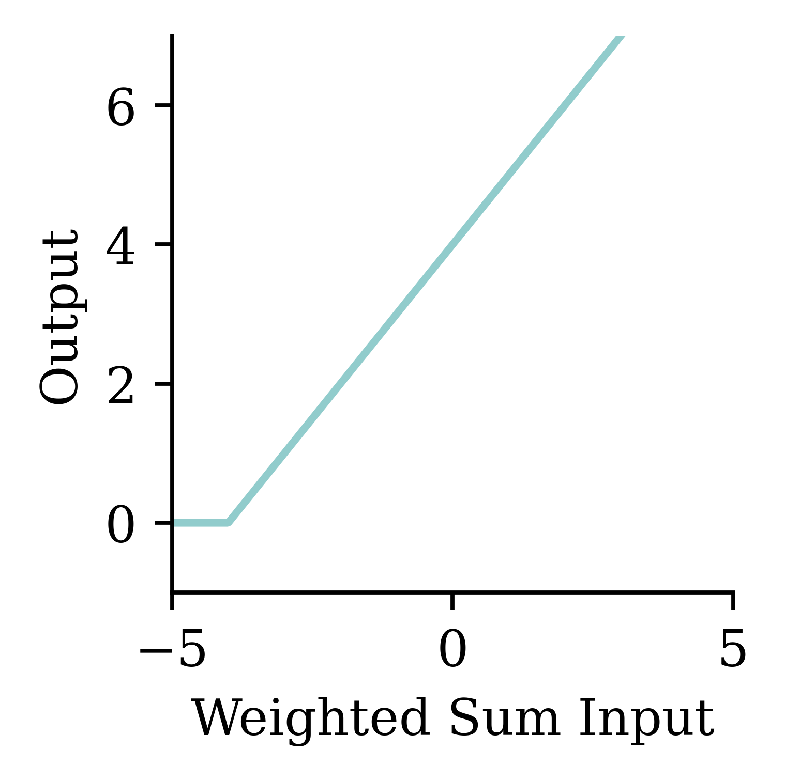
Take the best, you’d think it has \approx 98\% accuracy!
Using the same dataset for both validating and testing purposes can result in a data leakage. The information from supposedly ‘unseen’ data is now used by the model during its tuning. This results in a situation where the model is now ‘learning’ from the test data, and it could lead to overly optimistic results in the model evaluation stage.
X_train| MedInc | HouseAge | AveRooms | AveBedrms | Population | AveOccup | Latitude | Longitude | |
|---|---|---|---|---|---|---|---|---|
| 9107 | 4.1573 | 19.0 | 6.162630 | 1.048443 | 1677.0 | 2.901384 | 34.63 | -118.18 |
| 13999 | 0.4999 | 10.0 | 6.740000 | 2.040000 | 108.0 | 2.160000 | 34.69 | -116.90 |
| 5610 | 2.0458 | 27.0 | 3.619048 | 1.062771 | 1723.0 | 3.729437 | 33.78 | -118.26 |
| ... | ... | ... | ... | ... | ... | ... | ... | ... |
| 8539 | 4.0727 | 18.0 | 3.957845 | 1.079625 | 2276.0 | 2.665105 | 33.90 | -118.36 |
| 2155 | 2.3190 | 41.0 | 5.366265 | 1.113253 | 1129.0 | 2.720482 | 36.78 | -119.79 |
| 13351 | 5.5632 | 9.0 | 7.241087 | 0.996604 | 2280.0 | 3.870968 | 34.02 | -117.62 |
12384 rows × 8 columns
Python’s matplotlib package \approx R’s basic plots.
import matplotlib.pyplot as plt
plt.scatter(features["Longitude"], features["Latitude"])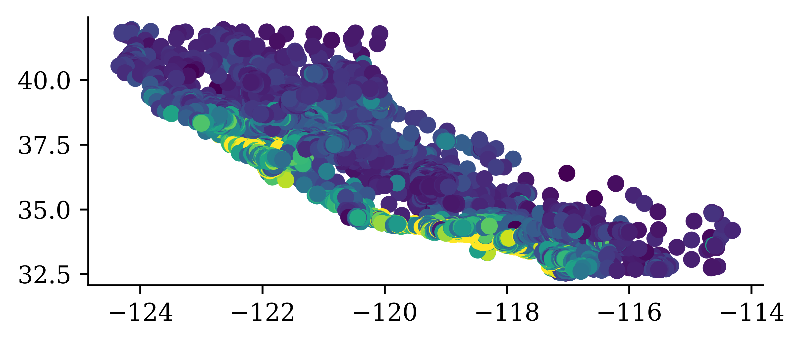
There’s no analysis is this EDA.
plt.scatter(features["Longitude"], features["Latitude"], c=target, cmap="coolwarm")
plt.colorbar()
“We observe that the median house prices are higher closer to the coastline.”
both = pd.concat([features, target], axis=1)
both.plot(kind="scatter", x="Longitude", y="Latitude", c="MedHouseVal", cmap="coolwarm")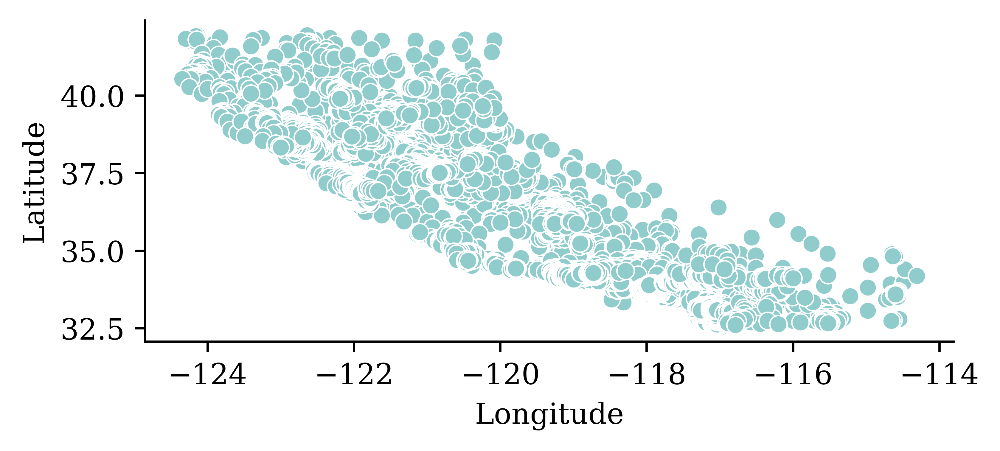
print(list(features.columns))['MedInc', 'HouseAge', 'AveRooms', 'AveBedrms', 'Population', 'AveOccup', 'Latitude', 'Longitude']How many?
num_features = len(features.columns)
num_features8Or
num_features = features.shape[1]
features.shape(20640, 8)\hat{y}_i = w_0 + \sum_{j=1}^p w_j x_{ij} .
1from sklearn.linear_model import LinearRegression
2lr = LinearRegression()
3lr.fit(X_train, y_train);LinearRegression class from the sklearn.linear_model module
lr which represents the linear regression function
lr.fit computes the coefficients of the regression model
The w_0 is in lr.intercept_ and the others are in
print(lr.coef_)[ 4.34267965e-01 9.88284781e-03 -9.39592954e-02 5.86373944e-01
-1.58360948e-06 -3.59968968e-03 -4.26013498e-01 -4.41779336e-01]X_train.head(3)| MedInc | HouseAge | AveRooms | AveBedrms | Population | AveOccup | Latitude | Longitude | |
|---|---|---|---|---|---|---|---|---|
| 9107 | 4.1573 | 19.0 | 6.162630 | 1.048443 | 1677.0 | 2.901384 | 34.63 | -118.18 |
| 13999 | 0.4999 | 10.0 | 6.740000 | 2.040000 | 108.0 | 2.160000 | 34.69 | -116.90 |
| 5610 | 2.0458 | 27.0 | 3.619048 | 1.062771 | 1723.0 | 3.729437 | 33.78 | -118.26 |
X_train.head(3) returns the first three rows of the dataset X_train.
y_pred = lr.predict(X_train.head(3))
y_predarray([1.81699287, 0.0810446 , 1.62089363])lr.predict(X_train.head(3)) returns the predictions for the first three rows of the dataset X_train.
We can manually calculate predictions using the linear regression model to verify the output of the lr.predict() function. In the following code, we first define w_0 as the intercept of the lr function (initial value for the prediction calculation), and then keep on adding the w_j \times x_j terms
1prediction = lr.intercept_
2for w_j, x_0j in zip(lr.coef_, X_train.iloc[0]):
3 prediction += w_j * x_0j
prediction prediction
X_train) and the corresponding weight coefficients from the fitted linear regression
1.8169928680677785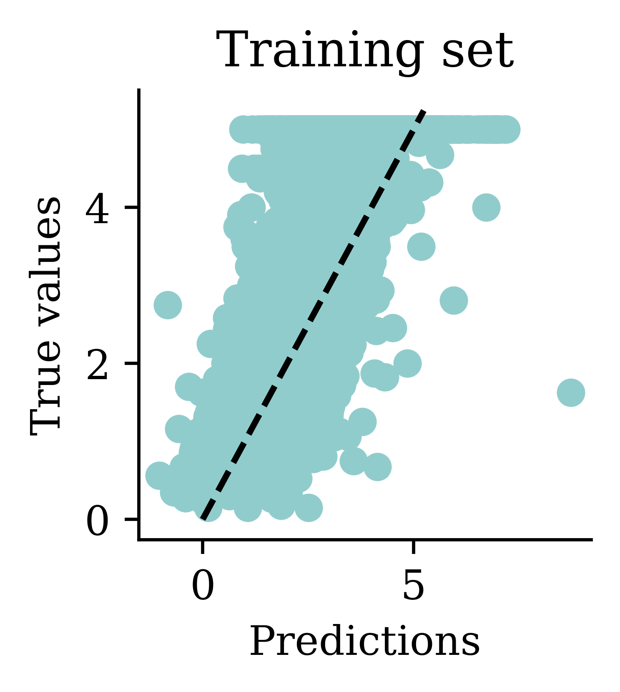
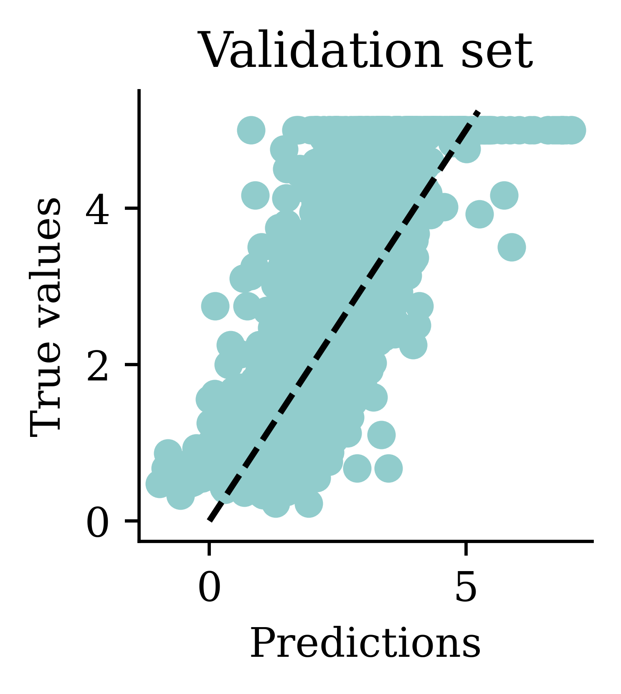
We can see how both plots have a dispersion to either sides of the fitted line.
import pandas as pd
y_pred = lr.predict(X_train)
df = pd.DataFrame({"Predictions": y_pred, "True values": y_train})
df["Squared Error"] = (df["Predictions"] - df["True values"]) ** 2
df.head(4)| Predictions | True values | Squared Error | |
|---|---|---|---|
| 9107 | 1.816993 | 2.281 | 0.215303 |
| 13999 | 0.081045 | 0.550 | 0.219919 |
| 5610 | 1.620894 | 1.745 | 0.015402 |
| 13533 | 1.168949 | 1.199 | 0.000903 |
df["Squared Error"].mean()0.5291948207479792mean_squared_errordf["Squared Error"].mean()0.5291948207479792We can compute the mean squared error to evaluate, on average, the accuracy of the predictions. To do this, we first create a data frame using pandas DataFrame function. It will have two columns, one with the predicted values and the other with the actual values. Next, we add another column to the same data frame using df["Squared Error"] that computes and stores the squared error for each row. Using the function df["Squared Error"].mean(), we extract the column ‘Squared Error’ from the data frame ‘df’ and calculate the ‘mean’.
from sklearn.metrics import mean_squared_error as mse
mse(y_train, y_pred)0.5291948207479792We can also use the function mean_squared_error from sklearn.metrics library to calculate the same.
Store the results in a dictionary:
mse_lr_train = mse(y_train, lr.predict(X_train))
mse_lr_val = mse(y_val, lr.predict(X_val))
mse_train = {"Linear Regression": mse_lr_train}
mse_val = {"Linear Regression": mse_lr_val}Thank about the units of the mean squared error. Is there a variation which is more interpretable?
Storing results in data structures like dictionaries is a good practice that can help in managing and handling data efficiently.
Keras is common way of specifying, training, and using neural networks. It gives a simple interface to various backend libraries, including Tensorflow.

Decide on the architecture: a simple fully-connected network with one hidden layer with 30 neurons.
Create the model:
1from keras.models import Sequential
2from keras.layers import Dense, Input
model = Sequential(
[Input((num_features,)),
Dense(30, activation="leaky_relu"),
Dense(1, activation="leaky_relu")]
3)Sequential from keras.models
Dense from keras.layers
Sequential() function
This neural network architecture includes one hidden layer with 30 neurons and an output layer with 1 neuron. While there is an activation function specified (leaky_relu) for the hidden layer, there is no activation function specified for the output layer. In situations where there is no specification, the output layer assumes a linear activation.
model.summary()Model: "sequential"
┏━━━━━━━━━━━━━━━━━━━━━━━━━━━━━━━━━┳━━━━━━━━━━━━━━━━━━━━━━━━┳━━━━━━━━━━━━━━━┓ ┃ Layer (type) ┃ Output Shape ┃ Param # ┃ ┡━━━━━━━━━━━━━━━━━━━━━━━━━━━━━━━━━╇━━━━━━━━━━━━━━━━━━━━━━━━╇━━━━━━━━━━━━━━━┩ │ dense (Dense) │ (None, 30) │ 270 │ ├─────────────────────────────────┼────────────────────────┼───────────────┤ │ dense_1 (Dense) │ (None, 1) │ 31 │ └─────────────────────────────────┴────────────────────────┴───────────────┘
Total params: 301 (1.18 KB)
Trainable params: 301 (1.18 KB)
Non-trainable params: 0 (0.00 B)
model = Sequential([Dense(30, activation="leaky_relu"), Dense(1, activation="leaky_relu")])
model.predict(X_val.head(3), verbose=0)array([[-91.88699 ],
[-57.336792 ],
[ -1.2164348]], dtype=float32)model = Sequential([Dense(30, activation="leaky_relu"), Dense(1, activation="leaky_relu")])
model.predict(X_val.head(3), verbose=0)array([[-63.595753],
[-34.14082 ],
[ 17.690414]], dtype=float32)We can see how rerunning the same code with the same input data results in significantly different predictions. This is due to the random initialization.
import random
random.seed(123)
model = Sequential([Dense(30, activation="leaky_relu"), Dense(1, activation="leaky_relu")])
display(model.predict(X_val.head(3), verbose=0))
random.seed(123)
model = Sequential([Dense(30, activation="leaky_relu"), Dense(1, activation="leaky_relu")])
display(model.predict(X_val.head(3), verbose=0))array([[ 1.3595750e+03],
[ 8.2818079e+02],
[-1.2993939e+00]], dtype=float32)array([[ 1.3595750e+03],
[ 8.2818079e+02],
[-1.2993939e+00]], dtype=float32)By setting the seed, we can control for the randomness.
random.seed(123)
model = Sequential([
Dense(30, activation="leaky_relu"),
Dense(1, activation="leaky_relu")
])
model.compile("adam", "mse")
%time hist = model.fit(X_train, y_train, epochs=5, verbose=False)
hist.history["loss"]CPU times: user 1.26 s, sys: 130 ms, total: 1.39 s
Wall time: 1.03 s[18765.189453125,
178.23837280273438,
103.30640411376953,
48.04053497314453,
18.110933303833008]The above code explains how we would fit a basic neural network. First, we define the seed for reproducibility. Next, we define the architecture of the model. Thereafter, we compile the model. Compiling involves giving instructions on how we want the model to be trained. At the least, we must define the optimizer and loss function. The optimizer explains how the model should learn (how the model should update the weights), and the loss function states the objective that the model needs to optimize. In the above code, we use adam as the optimizer and mse (mean squared error) as the loss function. After compilation, we fit the model. The fit() function takes in the training data, and runs the entire dataset through 5 epochs before training completes. What this means is that the model is run through the entire dataset 5 times. Suppose we start the training process with the random initialization, run the model through the entire data, calculate the mse (after 1 epoch), and update the weights using the adam optimizer. Then we run the model through the entire dataset once again with the updated weights, to calculate the mse at the end of the second epoch. Likewise, we would run the model 5 times before the training completes. hist.history() function returns the calculate mse at each step.
%time command computes and prints the amount of time spend on training. By setting verbose=False we can avoid printing of intermediate results during training. Setting verbose=True is useful when we want to observe how the neural network is training.
y_pred = model.predict(X_train[:3], verbose=0)
y_predarray([[ 0.5477159 ],
[-1.525452 ],
[-0.25848356]], dtype=float32)The .predict gives us a ‘matrix’ not a ‘vector’. Calling .flatten() will convert it to a ‘vector’.
print(f"Original shape: {y_pred.shape}")
y_pred = y_pred.flatten()
print(f"Flattened shape: {y_pred.shape}")
y_predOriginal shape: (3, 1)
Flattened shape: (3,)array([ 0.5477159 , -1.525452 , -0.25848356], dtype=float32)

One problem with the predictions is that lots of predictions include negative values, which is unrealistic for house prices. We might have to rethink the activation function in the output layer.
y_pred = model.predict(X_val, verbose=0)
mse(y_val, y_pred)8.391657291598232mse_train["Basic ANN"] = mse(
y_train, model.predict(X_train, verbose=0)
)
mse_val["Basic ANN"] = mse(y_val, model.predict(X_val, verbose=0))Some predictions are negative:
y_pred = model.predict(X_val, verbose=0)
y_pred.min(), y_pred.max()(-5.371005, 16.863848)y_val.min(), y_val.max()(0.225, 5.00001)random.seed(123)
model = Sequential([
Dense(30, activation="leaky_relu"),
Dense(1, activation="leaky_relu")
])
model.compile("adam", "mse")
%time hist = model.fit(X_train, y_train, epochs=50, verbose=False)CPU times: user 9.19 s, sys: 709 ms, total: 9.9 s
Wall time: 6.92 sWe will train the same neural network architecture with more epochs (epochs=50) to see if the results improve.
plt.plot(range(1, 51), hist.history["loss"])
plt.xlabel("Epoch")
plt.ylabel("MSE");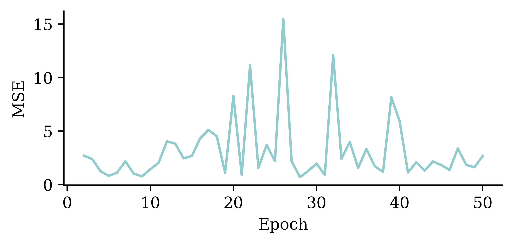
The loss curve experiences a sudden drop even before finishing 5 epochs and remains consistently low. This indicates that increasing the number of epochs from 5 to 50 does not significantly increase the accuracy.
plt.plot(range(2, 51), hist.history["loss"][1:])
plt.xlabel("Epoch")
plt.ylabel("MSE");
The above code filters out the MSE value from the first epoch. It plots the vector of MSE values starting from the 2nd epoch. By doing so, we can observe the fluctuations in the MSE values across different epochs more clearly. Results show that the model does not benefit from increasing the epochs.
y_pred = model.predict(X_val, verbose=0)
print(f"Min prediction: {y_pred.min():.2f}")
print(f"Max prediction: {y_pred.max():.2f}")Min prediction: -0.79
Max prediction: 12.92plt.scatter(y_pred, y_val)
plt.xlabel("Predictions")
plt.ylabel("True values")
add_diagonal_line()mse_train["Long run ANN"] = mse(
y_train, model.predict(X_train, verbose=0)
)
mse_val["Long run ANN"] = mse(y_val, model.predict(X_val, verbose=0))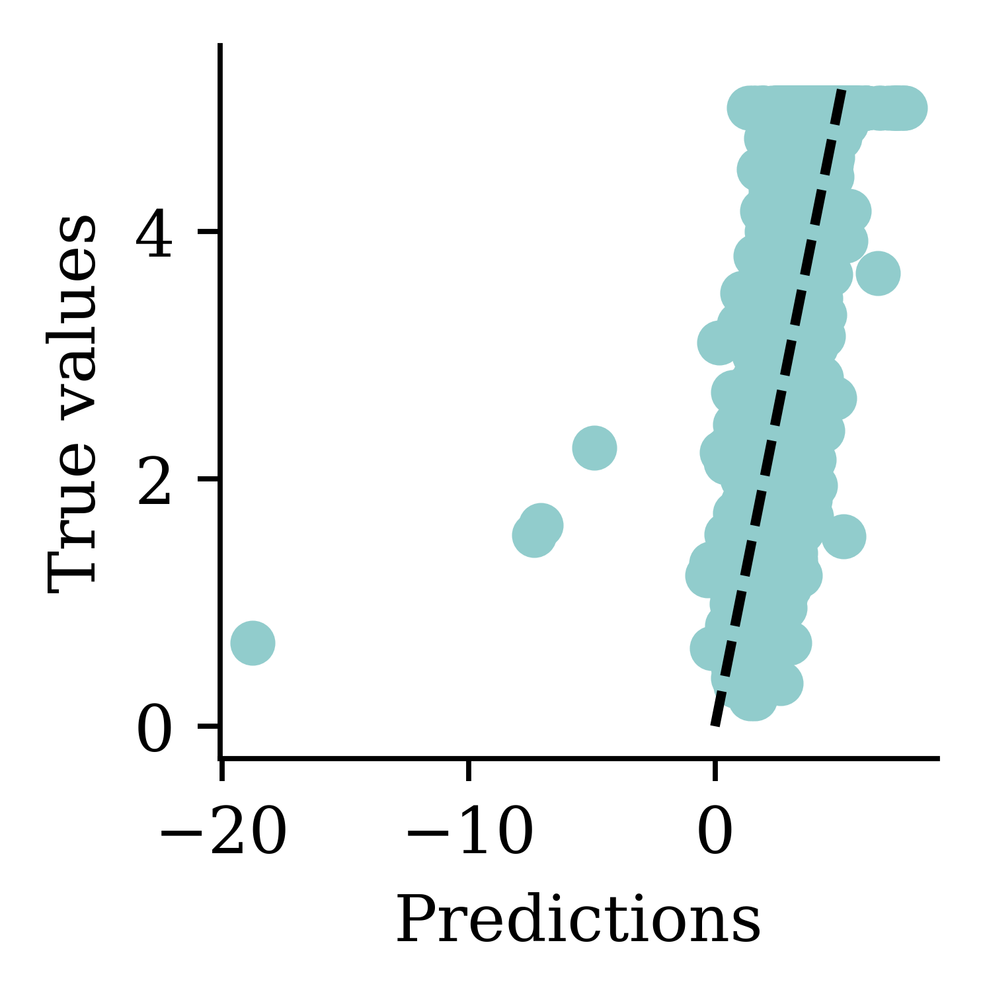

We should be mindful when selecting the activation function. Both tanh and sigmoid functions restrict the output values to the range of [0,1]. This is not sensible for house price modelling. softplus does not have that problem. Also, softplus ensures the output is positive which is realistic for house prices.
random.seed(123)
model = Sequential([
Dense(30, activation="leaky_relu"),
Dense(1, activation="softplus")
])
model.compile("adam", "mse")
%time hist = model.fit(X_train, y_train, epochs=50, \
verbose=False)
import numpy as np
losses = np.round(hist.history["loss"], 2)
print(losses[:5], "...", losses[-5:])CPU times: user 9.01 s, sys: 593 ms, total: 9.61 s
Wall time: 6.67 s
[1.856457e+04 5.640000e+00 5.640000e+00 5.640000e+00 5.640000e+00] ... [5.64 5.64 5.64 5.64 5.64]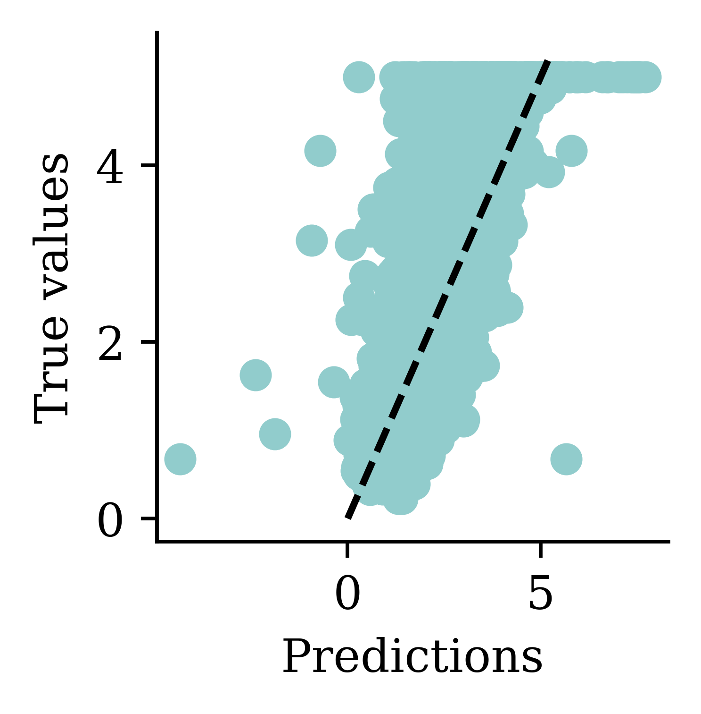
Plots illustrate how all the outputs were stuck at zero. Irrespective of how many epochs we run, the output would always be zero.
random.seed(123)
model = Sequential([
Dense(30, activation="leaky_relu"),
Dense(1, activation="exponential")
])
model.compile("adam", "mse")
%time hist = model.fit(X_train, y_train, epochs=5, verbose=False)
losses = hist.history["loss"]
print(losses)CPU times: user 1.02 s, sys: 76.8 ms, total: 1.1 s
Wall time: 845 ms
[nan, nan, nan, nan, nan]Training the model again with an exponential activation function will give nan values. This is because the results then can explode easily.

Fitting \ln(\text{Median Value}) is mathematically identical to the exponential activation function in the final layer (but metrics are in different units).
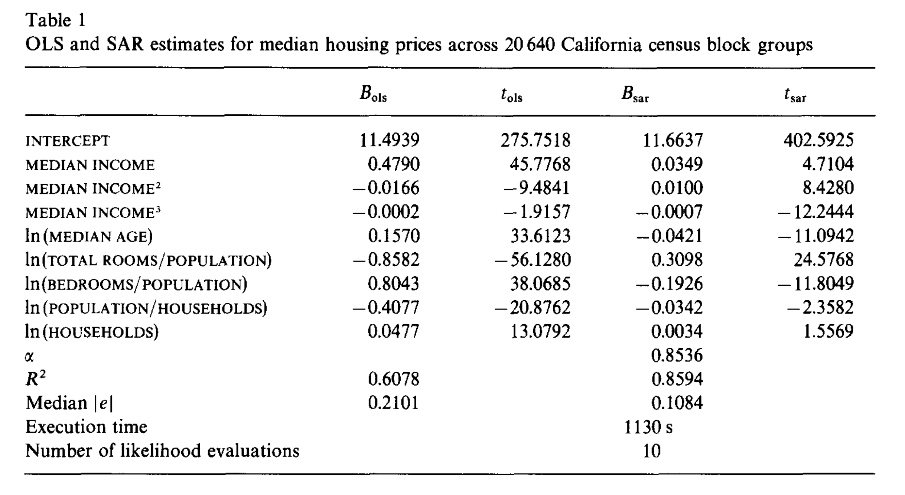

I’d previously given it the CSV of the data.

from sklearn.preprocessing import StandardScaler, MinMaxScaler
scaler = StandardScaler()
scaler.fit(X_train)
X_train_sc = scaler.transform(X_train)
X_val_sc = scaler.transform(X_val)
X_test_sc = scaler.transform(X_test)Note: We apply both the fit and transform operations on the train data. However, we only apply transform on the validation and test data.
plt.hist(X_train.iloc[:, 0])
plt.hist(X_train_sc[:, 0])
plt.legend(["Original", "Scaled"]);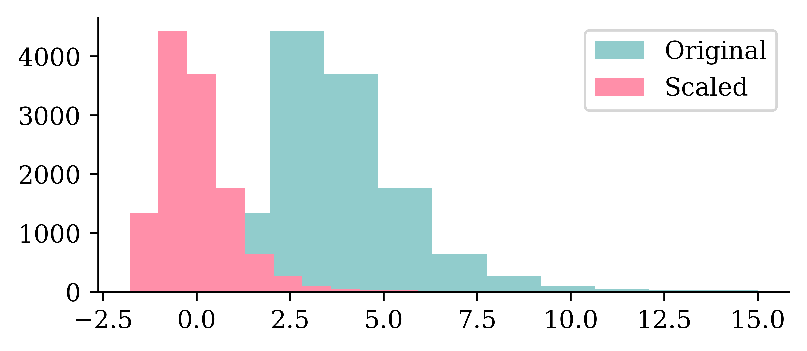
We can see how the original values for the input varied between 0 and 10, and how the scaled input values are now between -2 and 2.5. Neural networks prefer if the inputs range between -1 and 1.
plt.plot(range(1, 51), hist.history["loss"])
plt.xlabel("Epoch")
plt.ylabel("MSE");plt.plot(range(2, 51), hist.history["loss"][1:])
plt.xlabel("Epoch")
plt.ylabel("MSE");y_pred = model.predict(X_val_sc, verbose=0)
print(f"Min prediction: {y_pred.min():.2f}")
print(f"Max prediction: {y_pred.max():.2f}")Min prediction: 0.00
Max prediction: 18.45plt.scatter(y_pred, y_val)
plt.xlabel("Predictions")
plt.ylabel("True values")
add_diagonal_line()mse_train["Exp ANN"] = mse(
y_train, model.predict(X_train_sc, verbose=0)
)
mse_val["Exp ANN"] = mse(y_val, model.predict(X_val_sc, verbose=0))
Now the predictions are always non-negative.
On training data:
mse_train{'Linear Regression': 0.5291948207479792,
'Basic ANN': 8.374382131620425,
'Long run ANN': 0.9770473035600079,
'Exp ANN': 0.3182808342909683}On validation data (expect worse, i.e. bigger):
mse_val{'Linear Regression': 0.5059420205381367,
'Basic ANN': 8.391657291598232,
'Long run ANN': 0.9279673788287134,
'Exp ANN': 0.36969620817676596}Note: The error on the validation set is usually higher than the training set.
train_results = pd.DataFrame(
{"Model": mse_train.keys(), "MSE": mse_train.values()}
)
train_results.sort_values("MSE", ascending=False)| Model | MSE | |
|---|---|---|
| 1 | Basic ANN | 8.374382 |
| 2 | Long run ANN | 0.977047 |
| 0 | Linear Regression | 0.529195 |
| 3 | Exp ANN | 0.318281 |
val_results = pd.DataFrame(
{"Model": mse_val.keys(), "MSE": mse_val.values()}
)
val_results.sort_values("MSE", ascending=False)| Model | MSE | |
|---|---|---|
| 1 | Basic ANN | 8.391657 |
| 2 | Long run ANN | 0.927967 |
| 0 | Linear Regression | 0.505942 |
| 3 | Exp ANN | 0.369696 |

Early stopping can be seen as a regularization technique to avoid overfitting. The plot shows that both training error and validation error decrease at the beginning of training process. However, after a while, validation error starts to increase while training error keeps on decreasing. This is an indication of overfitting. Overfitting leads to poor performance on the unseen data, which is seen here through the gradual increase of validation error. Early stopping can track the model’s performance through the training process and stop the training at the right time.
Hinton calls it a “beautiful free lunch”
1from keras.callbacks import EarlyStopping
2random.seed(123)
3model = Sequential([
Dense(30, activation="leaky_relu"),
Dense(1, activation="exponential")
])
4model.compile("adam", "mse")
5es = EarlyStopping(restore_best_weights=True, patience=15)
%time hist = model.fit(X_train_sc, y_train, epochs=1_000, \
6 callbacks=[es], validation_data=(X_val_sc, y_val), verbose=False)
7print(f"Keeping model at epoch #{len(hist.history['loss'])-10}.")EarlyStopping from keras.callbacks
patience parameter tells how many epochs the neural network has to wait without no improvement before the process stops. patience=15 indicates that the neural network will wait for 15 epochs without any improvement before it stops training. restore_best_weights=True ensures that model’s weights will be restored to the best model, i.e., the model we saw before 15 epochs
CPU times: user 5.67 s, sys: 466 ms, total: 6.14 s
Wall time: 4.39 s
Keeping model at epoch #14.plt.plot(hist.history["loss"])
plt.plot(hist.history["val_loss"])
plt.legend(["Training", "Validation"]);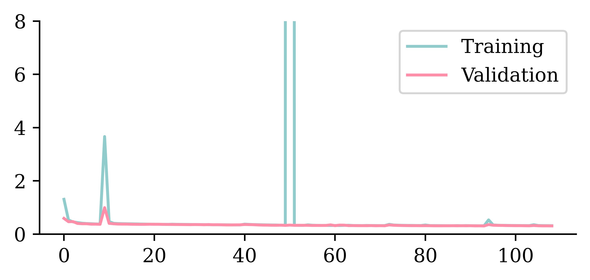
plt.plot(hist.history["loss"])
plt.plot(hist.history["val_loss"])
plt.ylim([0, 8])
plt.legend(["Training", "Validation"]);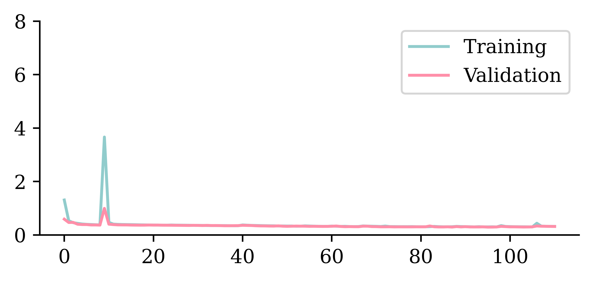
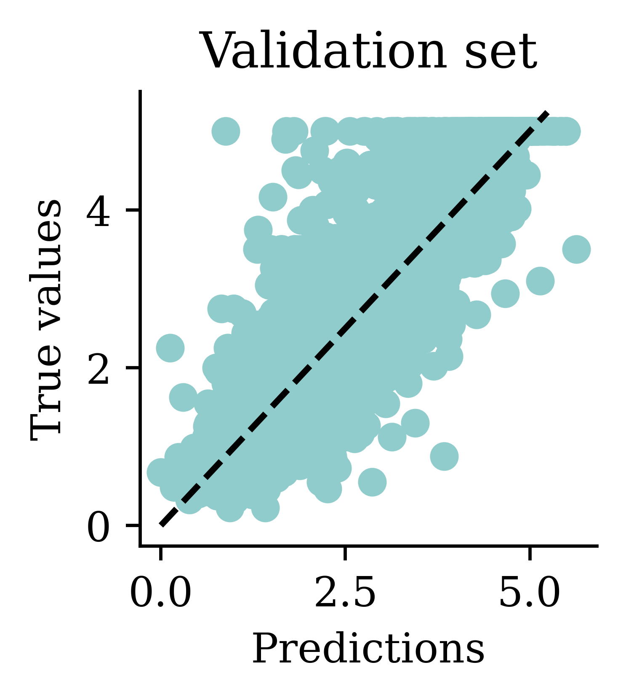
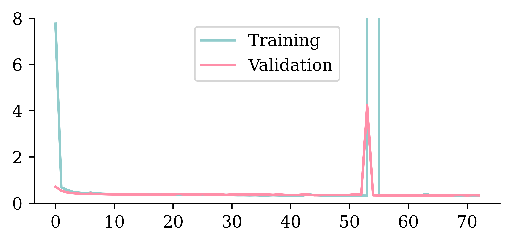
| Model | MSE | |
|---|---|---|
| 1 | Basic ANN | 8.391657 |
| 2 | Long run ANN | 0.927967 |
| 0 | Linear Regression | 0.505942 |
| 4 | Early stop ANN | 0.386975 |
| 3 | Exp ANN | 0.369696 |
MSE error on the validation set has improved from the ANN model without early stopping (0.354653) to the one with early stopping (0.326440).
Evaluate only the final/selected model on the test set.
mse(y_test, model.predict(X_test_sc, verbose=0))0.4026048522207643model.evaluate(X_test_sc, y_test, verbose=False)0.4026048183441162Evaluating the model on the unseen test set provides an unbiased view on how the model will perform. Since we configured the model to track ‘mse’ as the loss function, we can simply use model.evaluate() function on the test set and get the same answer.
from pathlib import Path
from keras.callbacks import ModelCheckpoint
random.seed(123)
model = Sequential(
[Dense(30, activation="leaky_relu"), Dense(1, activation="exponential")]
)
model.compile("adam", "mse")
mc = ModelCheckpoint(
"best-model.keras", monitor="val_loss", save_best_only=True
)
es = EarlyStopping(restore_best_weights=True, patience=5)
hist = model.fit(
X_train_sc,
y_train,
epochs=100,
validation_split=0.1,
callbacks=[mc, es],
verbose=False,
)
Path("best-model.keras").stat().st_size19215ModelCheckpoint is also another useful callback function that can be used to save the model at some intervals during training. This is useful when training large datasets. If the training process gets interrupted at some point, last saved set of weights from model checkpoints can be used to resume the training process instead of starting from the beginning.
from watermark import watermark
print(watermark(python=True, packages="keras,matplotlib,numpy,pandas,seaborn,scipy,torch,tensorflow,tf_keras"))Python implementation: CPython
Python version : 3.11.9
IPython version : 8.24.0
keras : 3.3.3
matplotlib: 3.9.0
numpy : 1.26.4
pandas : 2.2.2
seaborn : 0.13.2
scipy : 1.11.0
torch : 2.0.1
tensorflow: 2.16.1
tf_keras : 2.16.0
{kind=link}